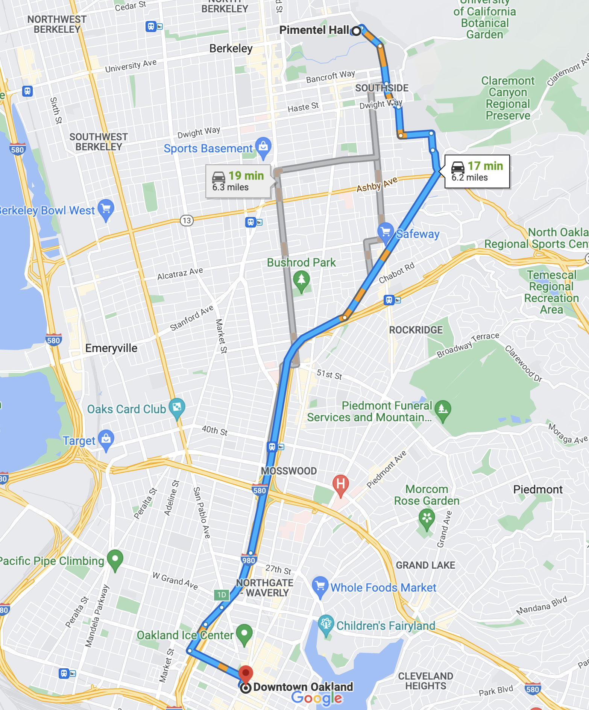
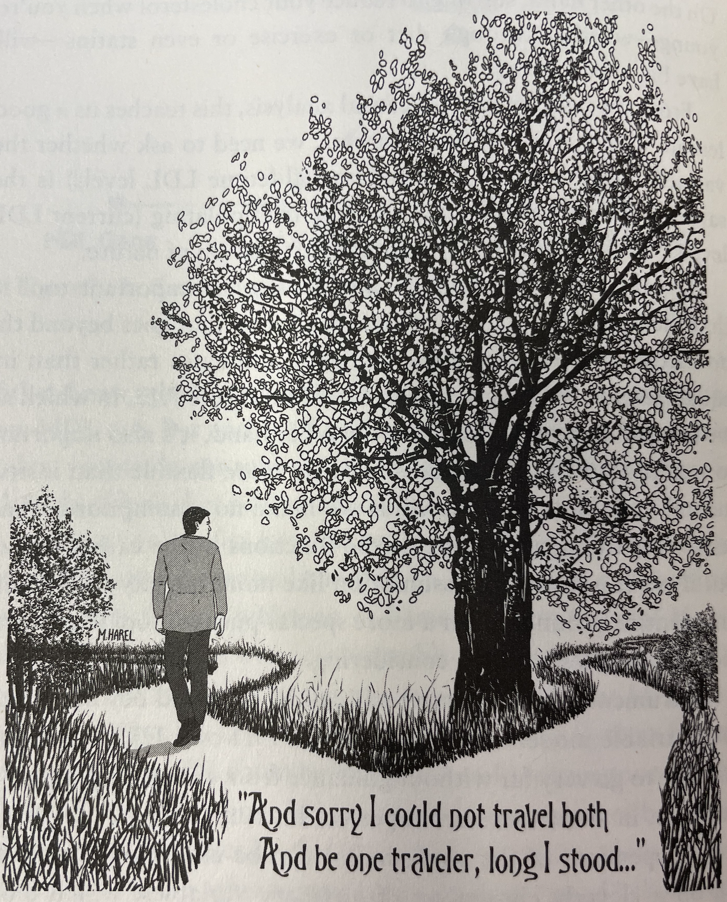

| Student Name | Went to Cal | Salary ($) |
|---|---|---|
| Evelyn Fix | yes | 150000 |
| Evelyn Fix | no | 112000 |
Defining Causality
Conditional counterfactuals and average treatment effects
WarningThis page covers…
- TODO
Intro: a spider web of causes
What does it mean to say that “A causes B”?
We speak of causes and effects all the time, even though the language we use varies widely. “I took an aspirin and my headache got better” implies that taking the aspirin is what caused your headache to get better. “She was able to find a good job because she graduated from Berkeley” is more direct: graduating from Berkeley was the cause of her being able to find a good job.
Identifying a causal statement is one thing, but we’re still left the conundrum: what definition can we use to be precise about the meaning of a causal statement?
You don’t believe that’s a big deal, right?
Try yourself.
Try to create a definition of causation that is not just a tautology, i.e. that does not just go back on itself and try to define causation by using causation.
Alas! Our human intuition for causation is not enough, unfortunately!
Let’s see what your intuition tells you about what is a cause and what is not a cause. Which causes do you identify in the following scenario?
Suppose there is Stat 20 class today. The Reader printed the warmup sheets, which are in the box. The Tutor is handing out the sheets now, to the people who come in on time. If you were late, you wouldn’t get a sheet, except, you would still go to the professor and ask for one. The professor always gives in…
Now, imagine you are in class and have a warmup sheet in your hands.
What caused you to have the warmup sheet in your hands?
A. The Reader printing the sheets.
B. The Tutor handing out the sheets.
C. You coming to class.
D. You being late.
E. You asking for a sheet.
As you ponder where to draw the line to determine which of these events are the cause of you holding the sheet, you are working out your own internal definition of causation. Keep your answers in mind: we will discuss this example in class. For now, though, let’s introduce the most widely used definitions of cause and effect.
Causation in Statistics: The Conditional Counterfactual
One of the earliest articulations of what it means to be a cause, in the way we use it in Statstics, can be found in the writing of Thucydides, the ancient Greek historian. It comes at the end of a passage where he describes a village called Orobiae, which experienced an earthquake followed by a tsunami.
About the same time that these earthquakes were so common, the sea at Orobiae, in Euboea, retiring from the then line of coast, returned in a huge wave and invaded part of the town, and retreated leaving some of it still under water; so that what was once land is now sea…
The cause, in my opinion of this phenomenon must be sought in the earthquake. At the point where its shock has been the most violent, the sea is driven back, and suddenly recoiling with redoubled force, causes the inundation.
Without the earthquake, I do not see how such an accident could happen.
In the final line, Thucydides makes a leap: he imagines a world where the earthquake didn’t happen, and can’t imagine the tsunami happening. This, for him, is what makes the earthquake the cause of the tsunami. This form of reasoning about causation was summarized centuries later by the Scottish philosopher David Hume, who characterized a cause as a scenario in which “If the first object had not been, the second never had existed.”
Both of these thoughts rely upon imagining a world that was different from the one that was observed, a notion in logic called a counterfactual.
Keep in mind that Analytical Philosophy and Theoretical Physics have to say goodbye here. They don’t quite follow our path, at least not fully. They have generally different approaches to causation. (In fact some philosophers think causation is not a coherent concept at all, which the author of this notes also agrees with…)
But the following is the core of how Statistics and the Social Sciences think about causation.
Def. Counterfactual
A hypothetical alternative universe where a certain event, that happened in our actual universe, didn’t happen. (Or vice versa).
This notion is the core component of the most widely used definition of a cause: the conditional counterfactual definition.
Def. Causation
We say “A causes B” if, in a world where A didn’t happen, B wouldn’t happen either.
Using this definition of causation, let’s revisit two examples from above.
Consider the claim, “I took an aspirin and my headache got better”.
Using the conditional counterfactual definition, what would you need to know to determine if the aspirin caused the headache to improve?
Check your answer
You would need to know that, if they hadn’t taken an aspirin, their headache wouldn’t have gotten better.
Consider the claim, “She was able to find a good job because she graduated from Berkeley”.
Using the conditional counterfactual definition, what would you need to know to determine if graduating from Berkeley caused her to find a good job?
Check your answer
You would need to know that, if she hadn’t graduated from Berkeley, she wouldn’t have been able to find a good job.
These scenarios are way way too simplistic, however. Good for understanding the general idea, but bad for most applications. For example, they do not cover the situation where a variable (e.g. amount of time studied) only increases your chances of observing a value of another variable (e.g. final score in the class).
So let’s come to a better definition of causation for the Social Sciences
Causation between variables
Def. Causation between two variables
We say that random variable \(X\) (treatment or explanatory variable) causes random variable \(Y\) (response variable) if, in a counterfactual universe where the value of \(X\) is different, then the probability distribution of \(Y\) is different.
E.g. Aspirin again
- \(X\) = they take the aspirin or not (discrete, binary, 1 or 0)
- \(Y\) = how long until the headache goes away (continuous)
In a world where I take the aspirin, \(X = 1\), I expect the headache to go away in 43 minutes \(E(Y) = 43\) minutes
In a world where I don’t take the aspirin, \(X = 0\), I expect the headache to go away in 318 minutes \(E(Y) = 318\) minutes
The distribution of \(Y\) changed between the two worlds where you took the aspirin and didn’t (the expectation went down), therefore \(X\) caused \(Y\).
E.g. Studying for Stat 20
- \(X =\) amount of time studied per day (continuous)
- \(Y =\) letter grade at the end of the semester (categorical ordinal)
In a world where I study \(X = 23\) minutes per day, I have a 35% chance of geting an “A” or higher, i.e. \(\mbox{Prob}(Y \geq \mbox{"A"}) = 0.35\).
In a different world, where I study \(X = 38\) minutes per day, I have a 52% chance of geting an “A” or higher, i.e. \(\mbox{Prob}(Y \geq \mbox{"A"}) = 0.52\).
The distribution of \(Y\) changed between the two worlds where you studied for 23 vs. 38 minutes per day (the probability of “A” or higher went up), therefore \(X\) caused \(Y\).
Let’s introduce some more language then.
The language of causation: Potential Outcomes and Treatment Effect
Def. Potential Outcomes
Given a response variable \(Y\) and a treatment variable \(X\), for simplicity taking just two values \(X=0\) (control) and \(X=1\) (treatment). Define:
- \(Y(X=0)\) or \(Y_c\). The potential outcome in control conditions.
- \(Y(X=1)\) or \(Y_t\). The potential outcome in treatment conditions.
Think about what we just did. We are pretending that, for every data point (\(Y_c\)) you could observe under control (\(X=0\)), there would be an imaginary unobserved evil-twin data point (\(Y_t\)) that happened under all the same exact circumstances except for having a different value of the treatment variable \(X=1\), and vice versa.
E.g.
- \(Y_c\) = Amount of water I drank after I, the author of these notes, got home at 3:15pm on 11/02/2026, took off my shoes in the hallway and sneezed, walked up the stairs, poured 246 g of water in a plastic cup.
- \(Y_t\) = Amount of water I drank after I, the author of these notes, got home at 3:15pm on 11/02/2026, took off my shoes in the hallway and sneezed, walked up the stairs, poured 246 g of water in a glass.
- \(X\) = type of container you poured the water in. (Glass or plastic cup)
Now we’re ready to finally define the effect of taking the treatment.
Def. Treatment Effect
Given a response variable \(Y\) and a treatment variable \(X\), for simplicity taking just two values \(X=0\) (control) and \(X=1\) (treatment), We define the treatment effect as:
\[ \mbox{Treatment Effect} \equiv \delta \equiv Y(X=1) - Y(X=0) \equiv Y_t - Y_c \]
Okay, no big surprises so far. The effect of taking the treatment is the difference between what would happen if you took the treatment and what would happen if you took the control.
Wait a minute…
A new type of impossible task
A shiver goes down our spines. How are we gonna do that?
The conditional counterfactual definition of causation is sound in an abstract sense, but it is challenging when you start to think through what sort of data you could collect as evidence of causation. In the second example, we have data on the fact that she found a good job (the response variable) and that she went to Berkeley (the explanatory variable), but the counterfactual - that remains purely theoretical.
Poor us! This is a God-like power that is even mightier than the power to see the entire population that we were desperate to achieve in the generalization unit!
In an idealized world, to demonstrate that graduating from Cal was the cause of getting a good job, you would have to observe this data frame1.
In this idealized data frame, the two rows are both observations of the same person, making the decision to go to Cal at texactly the same time and situation of their lives, so they have the same values of every possible other variable: work experience, GPA, letters of recommendation, health, etc. The only difference is one of them went to Cal and the other (from the counterfactual world) did not. Because they differed on their response variable (salary after graduation), this would mean that going to Cal caused Evelyn to get a higher-paying job.
| Student Name | Salary if went to Cal (\(Y_t\)) | Salary if didn't go to Cal (\(Y_c\)) |
|---|---|---|
| Evelyn Fix | 150000 | 112000 |
The “challenge” is that we only ever get to observe one of the two rows above. Said another way, there are two potential outcomes for this scenario. One was observed (the job outcome after going to Cal) and the other was not (the job outcome without going to Cal).
| Student Name | Salary if went to Cal (\(Y_t\)) | Salary if didn't go to Cal (\(Y_c\)) |
|---|---|---|
| Evelyn Fix | 150000 | NA |
If you’ve ever used a GPS navigation app, you’re already accustomed to thinking in terms of potential outcomes. Here is the guidance Google Maps provides to travel from Pimentel Hall at Cal to downtown Oakland by car.

Each one of the three paths is a potential route I could take and each of those times are the app’s predictions for what the potential outcomes will be. Importantly, though, these are just predictions, not data. To collect data, I have to select one of these routes to drive, then I could record data on the time it took me. If I choose the blue path and it ends up taking me 16 minutes, I’ll never know for sure that it was my choice of the blue route that led to this apparently short drive time. To know that, I’d have to rewind the clock and, in a different world, decide to take one of the gray routes and observe a drive time that is more than 16 minutes.
While our definition of causation prevents us from ever making completely airtight conclusions about cause and effect in scenarios like these, over the years scientists and statisticians have crafted many clever strategies for working around these constraints to build compelling causal claims.
From individual-level claims to population-level claims
Our radical inability to observe both counterfactuals (both potential outcomes) and the natural randomness in each datapoint (after all maybe Evelyn got the higher paying job in treatment completely by luck) pushes us to slightly change our target.
It can be easier to make a claim about the typical causal effect among a population of individuals.
- Going to Cal would make Evelyn get a higher-paying job. (Individual predictive causal claim)
- Going to Cal would increase Evelyn’s salary expectation for her job. (Individual generalization causal claim)
- Going to Cal would increase people’s salary expectation for their job. (Population-level generalization causal claim)
The first is a strong statement about a single individual, Evelyn and their future observed salary. It’s an individual causal prediction. The second is still individual but it’s generalized to Evelyn’s salary variable distribution. It’s an individual causal generalization. The third is a much more general statement that creates expectations for a “generic” individual in a population, in the hopes that it can be helpful advice for everyone in that population. It’s a population-level causal generalization.
Population-level causation is the focus of many sciences, which aim to make general claims about the causal mechanisms of the world. The goal is to estimate the average treatment effect.
\[ \mbox{Average Treatment Effect} \equiv \tau \equiv E(Y_t - Y_c) \equiv \mu_{Y_t - Y_c} \]
You will have recognized the notorious population/distribution mean \(E()\). Yes: on top of the new challenges with counterfactuals, we will still be facing the traditional enemy from generalization, to be fought with the traditional methods: confidence intervals, hypothesis testing, and the like.
- Average Treatment Effect
- A population parameter that captures the effect of being administered a particular treatment, averaged over each group. Most often estimated by a difference in sample means or a difference in sample proportions.
In statement two above, a natural estimate for the average treatment effect would be the difference between the proportion of Cal graduates who got a good job and the proportion of non-Cal graduates who got a good job. That can be visualized in a simple example of three students who graduated from Cal and three who did not. The difference in the proportion with a good job is \(2/3 - 1/3 = 1/3\).
| Student Name | Salary if went to Cal (\(Y_t\)) | Salary if didn't go to Cal (\(Y_c\)) |
|---|---|---|
| Evelyn Fix | 150000 | 115000 |
| Nikhil Kote | 135000 | 101000 |
| Yiwen Lin | 105500 | 100000 |
| Name | Cal Grad | Good Job |
|---|---|---|
| Evelyn | TRUE | TRUE |
| Grace | TRUE | FALSE |
| Juan | TRUE | TRUE |
| Alex | FALSE | FALSE |
| Monica | FALSE | FALSE |
| Sriya | FALSE | TRUE |
| Cal Grad | P(Good Job) |
|---|---|
| TRUE | 0.67 |
| FALSE | 0.33 |
It is easier to come up with plausible-seeming estimates of average treatment effects than individual treatment effects because we see subjects under both treatment and control conditions. But to decide if estimates like the one we’ve just given are reliable we need to think about how the data for the two groups was generated and whether they serve as good approximations to each other’s counterfactuals.
This question will be the focus of the rest of the causality unit.
Summary
We set the stage for reasoning about causation by defining cause and effect in terms of a conditional counterfactual. We say “A causes B” if, in a world where A didn’t happen, B no longer happens. This definition is problematic because we can’t simultaneously observe the same subjects under A and not-A. However, there is more hope to say something meaningful about average treatment treatment effects, which can also be defined using counterfactuals.
In the remainder of the causality unit, we will discuss strategies for estimating average treatment effects using carefully-designed comparisons that leverage knowledge about how the data was produced.

Footnotes
An a historical aside, Evelyn Fix is the name of a past professor of statistics at UC Berkeley and the co-inventor of the k-nearest neighbors algorithm.↩︎
A drawing from “The Book of Why” depicting the notion of potential outcomes described in Robert Frost’s poem The Road Not Taken.↩︎